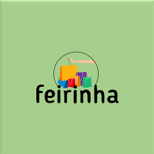
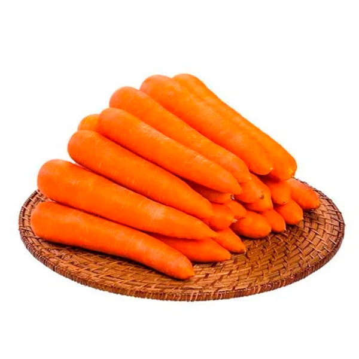

🌽 Feirinha Virtual Interativa 🌇

Responda perguntas e ganhe moedas para comprar alimentos direto da Chácara Humberto
Carregando pergunta...
Moedas:
0
🛒 Loja da Feirinha
Maçã - 3 moedas
Comprar
Banana - 2 moedas
Comprar

Cenoura - 4 moedas
Comprar